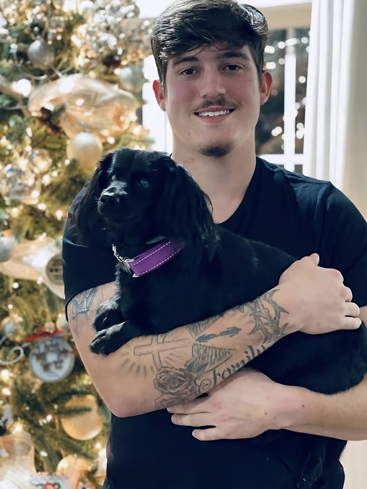

About Southeastern Lift


Cody Posey is a highly motivated and self-driven young man who is
passionate about achieving his goals and making a positive impact
in the world. With a strong work ethic and a natural curiosity,
Cody has always been driven to learn and explore new things. From
a young age, Cody has demonstrated a natural talent for leadership
and has always been willing to take on new challenges. Whether
it's in his personal life or in his academic pursuits, Cody is
never satisfied with mediocrity and always strives to be the best
that he can be.
Why us?
Southeastern Lift was started in 2013 by Shannon Posey. Since then, Shannon and his son, Cody, have been providing quality work to customers all around the southeast. Southeastern Lift has always been a family owned and operated company. Here at SEL we value family and supporting one another, we treat every customer like family by doing honest work.